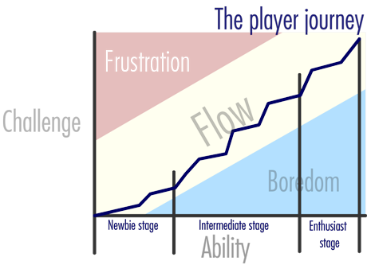
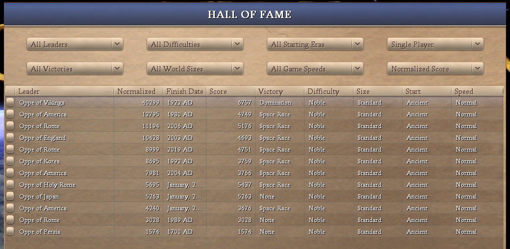
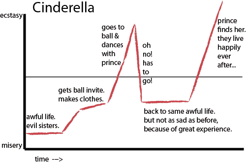
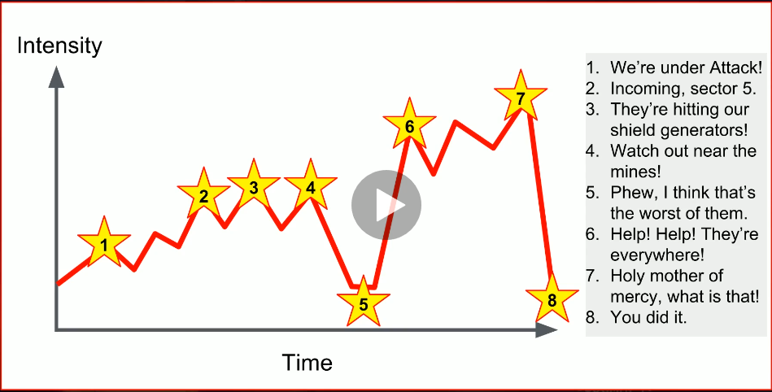

רכיבים דרמטיים
רכיבים הגורמים לשחקן להיות "מחובר" למשחק; להרגיש שהמשחק חשוב ומשמעותי עבורו.
- אתגר - challenge
- זרימה - flow
- שעשוע - play
- רגשות - emotions
- סיפור רקע - premise
- דמויות - characters
- בניית עולם - world-building
- עלילה - plot
- מטא-משחק - metagame
- ניהול חי - LiveOps
1. אתגר
| בלי | עם |
2. זרימה - flow
זרימה = התחושה של שחקן, שהוא מרוכז וממוקד במשחק.
אתגר וזרימה

שאלות שיעזרו לנו ליצור אתגר וזרימה
- מה הכישורים הדרושים כדי לשחק במשחק שלנו?
- איך אפשר לכוון את המשחק לרמות קושי שונות? (משתנים)
- איך נוודא שהשחקן יודע מה הוא צריך לעשות? (הדרכה)
- איך ניתן לשחקן משוב על הצלחה או כישלון? (מטלות ופתרונות, cutscenes)
- איך ניתן לשחקן תחושה שהוא שולט במצב? (פקדים, צלילים)
- איך נגרום לשחקן להיות מרוכז במשימה? (גרפיקה, מוסיקה)
3. שעשוע
פעולות מהנות שאינן קשורות למטרת המשחק. לדוגמה:
| בנייה ועיצוב | גילוי וסיור |
שחקנים שונים נהנים מסוגים שונים של פעילויות:
- האמן: אוהב לעצב ולקשט.
- הסייר: רוצה לגלות את העולם.
- התחרותי: רוצה להיות יותר טוב מאחרים.
- האספן: אוהב לצבור ולארגן חפצים.
- ההישגי: אוהב להתקדם לרמות מאתגרות יותר.
- הליצן: אוהב לעשות שטויות.
- הבמאי: אוהב להיות אחראי, לארגן מחזה.
- המספר: אוהב ליצור סיפורים דמיוניים.
- הצופה: אוהב לראות איך אנשים אחרים משחקים.
- המציג: אוהב שאנשים אחרים רואים אותו משחק.
- הבנאי: אוהב להנדס מבנים.
שעשוע - עוד דוגמאות
| תחרות | אספנות (של סיומים) |
|
 |
4. יצירת רגשות
מלבד הרגשות ה"רגילים" של שמחה הנאה וניצחון, אפשר גם ליצירת רגשות אחרים, למשל:| שלוה | צחוק |
| חברות | אשמה |
5. סיפור רקע
- אירועים שקרו, כביכול, לפני המשחק.
- נותנים משמעות לפעולות השחקן ולמטרת המשחק.
- נותנים משמעות למספרים ולאלגוריתמים של המשחק.
- מועברים בתחילת המשחק בדרכים שונות:
| תמונות וטקסט | קטעי וידיאו וקול |
| Overcooked | "העולם החדש" |
6. דמויות
- גיבור (protagonist) או מתנגד (antagonist)
- ראשי או משני
- שטוח או עגול
- קבוע או משתנה
- נשלט ע"י השחקן או ע"י המחשב
- עם או בלי רצון חופשי
דמויות ודרמה
| Mario - דמות מוכרת | Halo - האם אפשר להציל את תום? |
7. בניית עולם
- חוקי טבע
- גיאוגרפיה
- חיות וצמחים
- הסטוריה
- חברה ותרבות
- ממשלה
- כלכלה
| חן קלן, אינה גריגור, ה'תש"ף | |
| אחר-צהריים נצחי. איפה זה? |
| חוקי פיסיקה חדשים - Portal | |
| שו"ת בניית עולם | World Building StackExchange |
8. עלילה
- האירועים המתרחשים תוך-כדי המשחק.
- התנהגות השחקן משפיעה על העלילה.
| משחקי טקסט - עלילה בלבד | |
| משחק בלי עלילה | משחק עם עלילה |
עלילה - קשת דרמטית

קשת דרמטית במשחק יריות

כלים לבניית עלילה
| עלילה עם בינה מלאכותית |
9. מטא-משחק
MetaGame - "המשחק שמעל המשחק": מערכות שנותנות משמעות ארוכת-טווח לכל סבב משחק.
| לולאה | טווח זמן | דוגמה |
|---|---|---|
| לולאת ליבה (core loop) | שניות | לקפוץ, לירות, לאסוף מטבע |
| לולאת סבב (session loop) | דקות | לסיים שלב או קרב |
| מטא-משחק (meta loop) | ימים-חודשים | לשדרג דמות, לעלות בליגה |
סוגי מטא-משחק
| סוג | דוגמה |
|---|---|
| התקדמות קבועה | Rogue Legacy |
| אספנות | Pokémon GO |
| בנייה וניהול | Clash of Clans |
| דירוג ותחרות | Clash Royale |
| חברתי | Candy Crush Saga |
| סיפורי | Outer Wilds |
התקדמות קבועה: Rogue Legacy
|

|

אספנות: Pokémon GO
|
.jpg?width=800)
|
.jpg){kind=link}
בנייה וניהול: Clash of Clans
|

|

דירוג ותחרות: Clash Royale
|

|

חברתי: Candy Crush Saga
|

|

סיפורי: Outer Wilds
|

|

שאלות שיעזרו לנו לבנות מטא-משחק
- מה השחקן לוקח איתו מסבב לסבב? (משאבים, שדרוגים, ידע, סיפור)
- מה הסיבה של השחקן לחזור מחר? (מטרות יומיות, תוכן נעול)
- איך המטא-משחק משנה את לולאת הליבה? (יכולות חדשות - לא רק מספרים גדולים יותר)
- איך נשמור על הוגנות בין שחקן ותיק לחדש? (matchmaking, תקרות שדרוג)
- איך נמנע משחיקה? (grind משעמם, pay-to-win)
10. LiveOps
Live Operations = ניהול המשחק אחרי ההשקה: עדכון תוכן, אירועים ואיזון - בזמן שהשחקנים משחקים.
- המשחק הוא שירות ולא מוצר (Games as a Service).
- הפיתוח לא נגמר בהשקה - לפעמים הוא רק מתחיל.
- המטרה: לשמור על עניין השחקנים לאורך חודשים ושנים.
כלים של LiveOps
- אירועים מוגבלים בזמן - חגים, סופי-שבוע מיוחדים, אתגרים שבועיים.
- עונות ו-Battle Pass - מסלול פרסים שמתחדש כל כמה שבועות.
- תוכן חדש - מפות, דמויות, פריטים, מצבי משחק.
- עדכוני איזון - שינוי פרמטרים בעקבות נתונים מהשטח.
- חנות מתחלפת - הצעות מיוחדות לזמן מוגבל.
- קהילה - הודעות בתוך המשחק, רשתות חברתיות, תחרויות.
LiveOps כרכיב דרמטי
עולם שמשתנה בזמן אמת - לכל השחקנים ביחד.
| דוגמה | מה קרה | רכיב דרמטי |
|---|---|---|
| Fortnite - סוף הפרק הראשון (2019) | המפה כולה נבלעה ב"חור שחור", והמשחק לא היה זמין עד להשקת הפרק הבא | עלילה, בניית עולם |
| Fortnite - הופעות חיות | הופעות של אמנים בתוך המשחק, שמיליוני שחקנים צפו בהן יחד | שעשוע, חברות |
| Pokémon GO - Community Day | יום בחודש שבו פוקימון מסוים מופיע הרבה יותר, ושחקנים יוצאים לצוד ביחד | אספנות, חברות |
הטכנולוגיה שמאחורי LiveOps
- Remote Config - פרמטרים נשמרים בשרת ולא בקוד; משנים אותם בלי לשחרר גרסה חדשה (Unity Remote Config, Firebase Remote Config).
- Feature flags - אירוע "מוכן מראש" בקוד, שמופעל ע"י שינוי ערך בשרת.
- הורדת תוכן - גרפיקה ושלבים חדשים בלי עדכון בחנות (Unity Addressables, Asset Bundles).
- אנליטיקה - איסוף נתונים על התנהגות השחקנים.
- A/B testing - גרסאות שונות לקבוצות שחקנים שונות, ובודקים מה עובד טוב יותר.
דוגמה: טעינת הגדרות מהשרת
[System.Serializable]
public class GameConfig {
public float enemySpeed;
public bool halloweenEvent;
}
async Awaitable<GameConfig> LoadConfigAsync() {
using UnityWebRequest req = UnityWebRequest.Get(configUrl);
await req.SendWebRequest();
if (req.result != UnityWebRequest.Result.Success)
return null;
return JsonUtility.FromJson<GameConfig>(req.downloadHandler.text);
}
async void Start() {
GameConfig config = await LoadConfigAsync();
if (config != null) {
enemySpeed = config.enemySpeed;
halloweenDecorations.SetActive(config.halloweenEvent);
}
}
משנים את קובץ ה-JSON בשרת - וכל השחקנים מקבלים את השינוי.
איך יודעים אם זה עובד? מדדים
- DAU / MAU - מספר השחקנים הפעילים ביום / בחודש.
- Retention D1 / D7 / D30 - כמה אחוז מהשחקנים חזרו אחרי יום / שבוע / חודש.
- Churn - כמה שחקנים הפסיקו לשחק.
- Session length - אורך משחק ממוצע.
- ARPDAU - הכנסה ממוצעת לשחקן פעיל ביום.
סכנות ושאלות אתיות
- FOMO - השחקן משחק מתוך פחד "לפספס", ולא מתוך הנאה.
- שחיקת השחקנים - המשחק הופך ל"עבודה" עם משימות יומיות.
- שחיקת הצוות - לוח זמנים קבוע של עדכונים, בלי סוף.
- תיבות שלל (loot boxes) - דומות להימורים; חלק מהמדינות מגבילות אותן (למשל בלגיה, הולנד, יפן).
סיכום
כמעצבי משחק, אנחנו יכולים להשתמש ברכיבים דרמטיים לפי בחירתנו כדי "לחבר" את השחקן למשחק:
- אתגר - challenge
- זרימה - flow
- שעשוע - play
- רגשות - emotions
- סיפור רקע - premise
- דמויות - characters
- בניית עולם - world-building
- עלילה - plot
- מטא-משחק - metagame
- ניהול חי - LiveOps